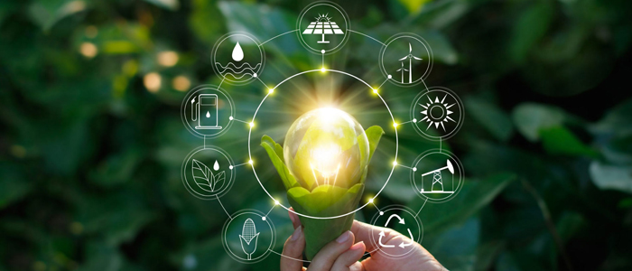

L'ambiente un malato
immaginario
immaginario
Spiegazione dell'attività
Per questa UDA che ha come protagonista l'ambiente e le sue problematiche, in diritto siamo andati a inscenare un processo composto da:
- DIFESA
- ACCUSA
- GIUDICI
Da dove abbiamo preso le informazioni?
CONTRO LA TRANSIZIONE ECOLOGICA (ACCUSA)

Le compagnie fossili bloccano la transizione ecologica
Senza regole più snelle, la transizione non parte
La sostenibilità piace, se i prezzi dei prodotti non aumentano
I tempi e costi delle imprese
I VANTAGGI DELLA TRANSIZIONE ECOLOGICA (DIFESA)

I cinque punti chiave della transizione ecologica
L'importanza della transizione ecologica nel nostro paese
Sito governativo
transizione verde